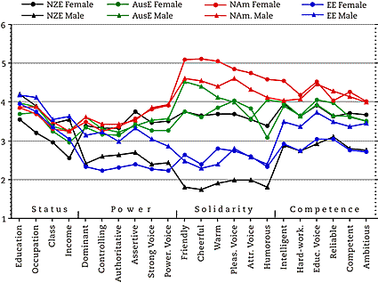
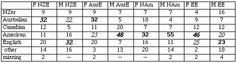
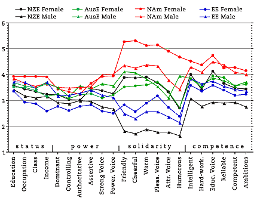
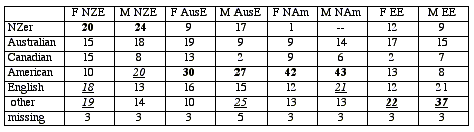

Evaluating English Accents WorldWide Results: SINGAPORE
Singapore Personality Trait Means
A. 56 National University of Singapore students
Mean age 22.6; 36 female, 19 male, 1 missing
(collected by Niti Pawakapan)

National University of Singapore Accent Guesses
Majority/plurality percentage for each speaker in boldface;
Major erroneous guesses italicised

Points to Note:
The range in status scores is very narrow compared to most of the other samples, but similar
to the Singapore high school students below.
The two EE voices score very low in almost all traits, except for those associated with status;
the low scores are particularly noticeable in the solidarity traits.
Although the female NZE voice is at the bottom in the four status traits,
she ranks well into the middle range in the other three dimensions.
As is usual in this set of evaluations, the two NAm voices are clear leaders in most traits,
with the exception of status.
Although the high status of the two EE voices and high solidarity ratings of the
American speakers may seem to fit stereotypes, this does not match the
identifications made by the students. Only the male American was correctly
identified by a majority, with pluralities also identifying the female NAm, male AusE,
and female EE voices as American. Almost as many guessed the male EE voice to be
American (20%) as thought he was English (23%).
B. 67 Boys' High School students
Mean age 12.6
(collected by Niti Pawakapan)

Singapore Boys' High School Accent Guesses
Majority/plurality percentage for each speaker in boldface;
Major erroneous guesses italicised

Points to note:
In comparing these results with the other high school sample
(Cornwall, UK), the most striking similarity
is the marked compression of range in mean trait values in the status and power
dimensions, and the equally marked width of variation in assignment of the solidarity traits.
Once again, the two NAm voices are clear leaders here, with the two EE voices and the
NZE male at the bottom in solidarity.
As with the NUS sample above, in no case did a majority choose the correct
national/ethnic group of a voice, but the two NAm voices were correctly identified
by a large number--51% and 49% if we count both American and Canadian as correct.
Only 21% correctly identified the EE male, and even less for the EE female voice (12%),
which 21% took to be Canadian.
21% identified the AusE male as Black American! Pluralities also identified the female
AusE voice as American. "American" is seemingly the most salient accent to both Singapore samples.
It is interesting to note the favourite TV programmes watched: in most popular
place "Who Wants to be a Millionaire?" (40%) is followed by "Survivor" (11%); in
second place, "Millionaire?" appears again (17%), followed by "Survivor" and sports
(11% each); in third place the only local programme ("Channel Newsasia") appears,
tied with films at 10% each.
Created by:
Owen Baxter,
Modified: 13 Mar 2002, Made with Macintosh